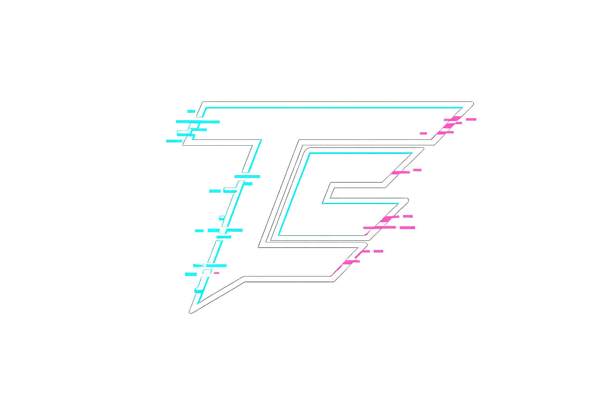

Open-source security engineering

TypeError
Practical tools, sharper metrics, and clearer decisions for defenders.
What TypeError Builds
TypeError builds open-source software for application security, vulnerability management, and security data analysis. The focus is operational clarity: tools that turn messy inputs into usable signal.
That means command-line tools, libraries, and integrations that make security work easier to measure, explain, and improve. Better metrics matter only when they lead to better decisions.